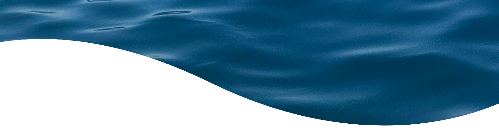
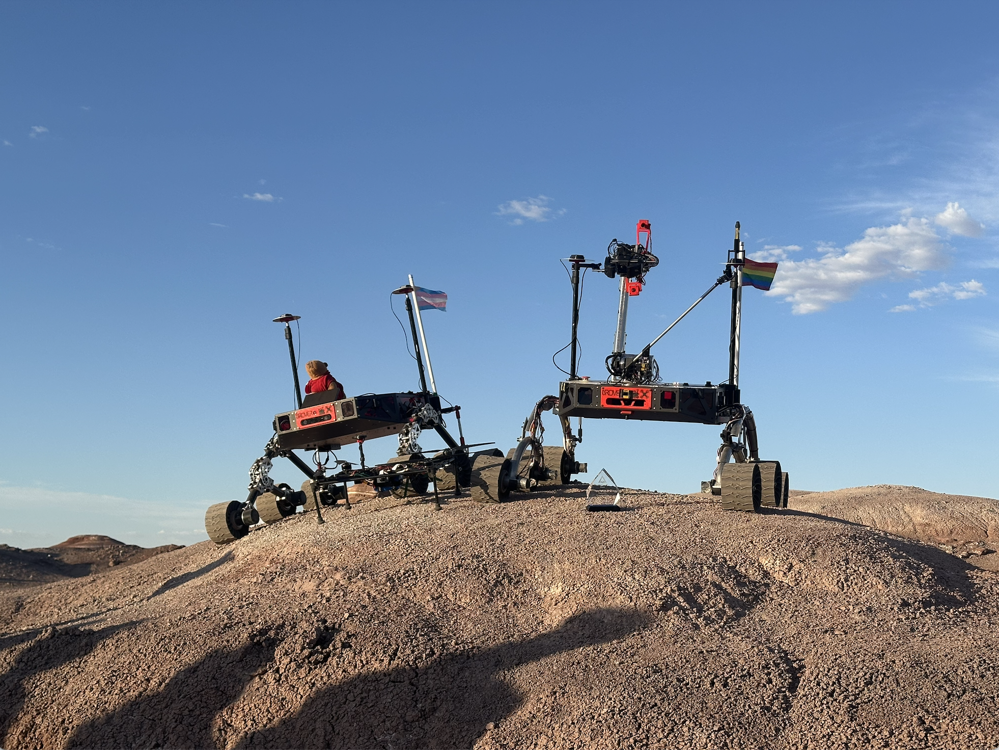
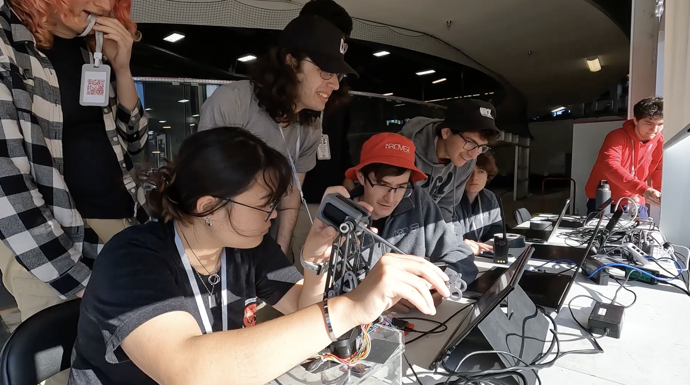
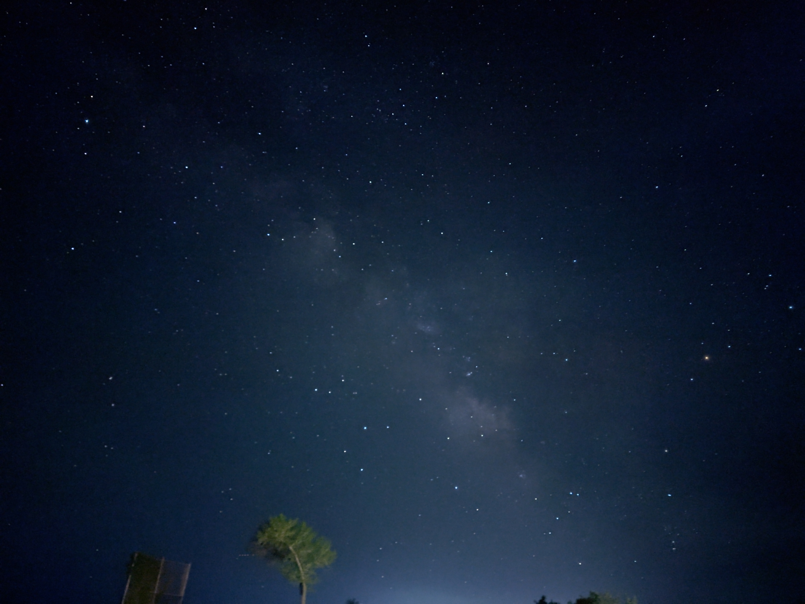
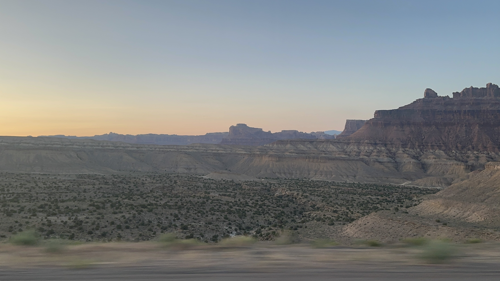
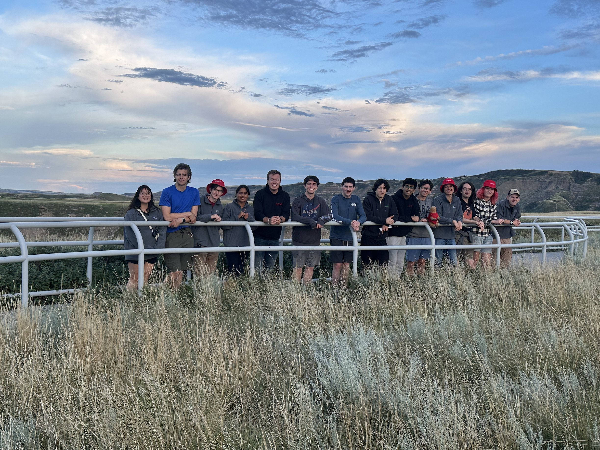

ig@nu.rover | nurover.com
I'm a current Co-Software Team Lead for Northeastern's Mars Rover team. NUROVER competes with our beloved rover Watney Mark VII in the University Rover Challenge (URC) in Hanksville, Utah and at the Canadian International Rover Challenge (CIRC) in Drumheller, Alberta. The team is a group of multidisciplinary engineers, scientists, and creators who share a love for robotics, capybaras, and soup.
NUROVER placed 3rd at URC 2025 and 5th at Summer CIRC 2025 after competeting with 37 incredibly talented international teams. We are excited to compete again at URC 2026 and Summer CIRC 2026.

Our 2025 competiton rover, Watney Mark VI and testbed rover Martinez.
As a co-lead, my role shifts from project managment, to leading
onboarding sessions in the Fall, to coordinating software
integration, amongst many other hats. On a weekly bassis, my co-lead
and I run a weekly meeting and a two weekly work sessions.
I have been the model arm operator for competition for our 2024 and
2025 seasons. My technial scope is mostly overseeing our STM32L4
firmware stack, radio communications, and ROS integration with motor
controllers and peripherals, but I've been spotted crimping,
soldering, and doing some other oddball tasks and there.

Operator's table at CIRC 2025, Arm Dexterity challenge.

Milky Way, Utah 2024

Landscape, Utah 2024

Outside the Royal Tyrell Museum, Alberta 2025